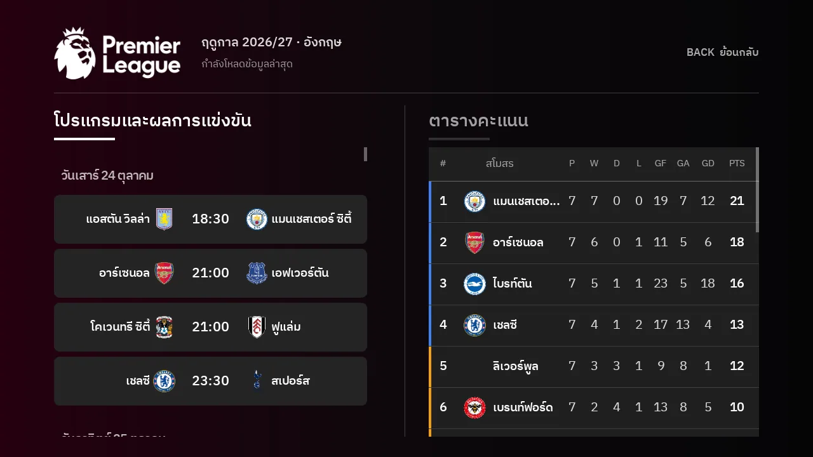
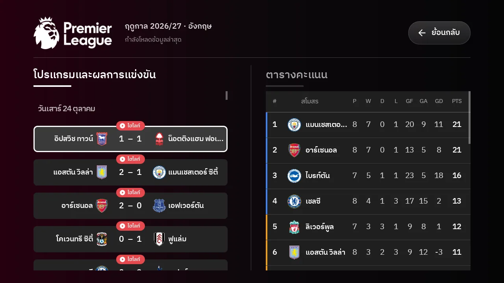
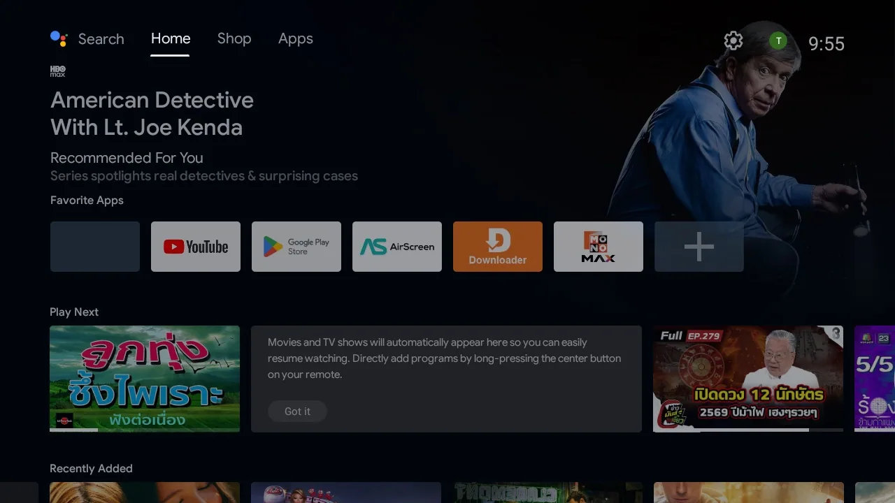
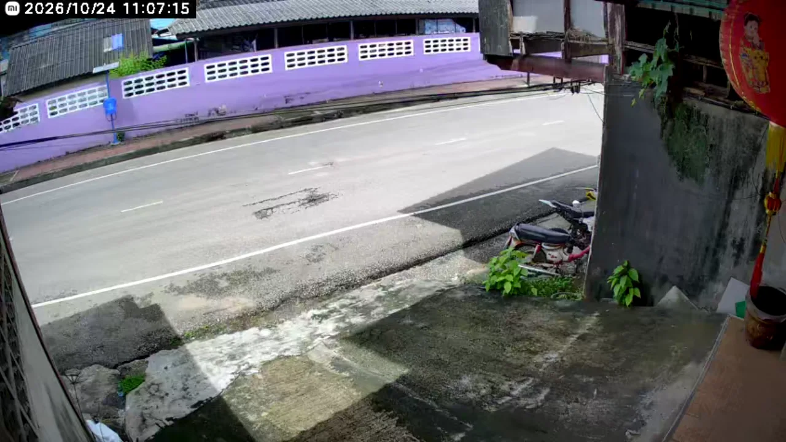
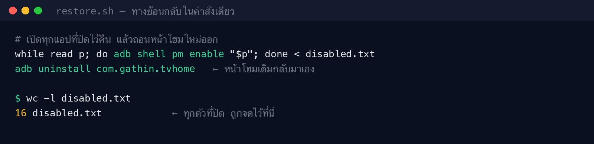

กล่องทีวี TX98
จากกล่องราคาถูกที่โกหกสเปกและแอบขายเน็ตบ้าน เหลือเป็นทีวีที่เปิดมาแล้วเจอแค่ 3 ปุ่มที่คนในบ้านใช้จริง โดยไม่ต้อง root และย้อนกลับได้ทุกขั้น

เริ่มจากล้างสิ่งที่ไม่ปลอดภัยออกจากกล่อง Android TV แล้วออกแบบประสบการณ์ใหม่ให้เปิดมาเจอ YouTube, Netflix, กล้องหน้าบ้าน และข้อมูลฟุตบอลที่อยากดูทันที
คนในบ้านใช้ไม่กี่อย่าง แต่หน้าจอมีให้เลือกเป็นสิบ
เคยไหม เปิด Netflix ตั้งใจจะดูหนังสักเรื่อง แต่มีตัวเลือกเยอะจนเลื่อนไปมา 20–30 นาที กว่าจะเลือกได้ เวลาที่เสียไปแทบพอจะดูหนังได้ครึ่งเรื่องแล้ว ปัญหาไม่ใช่ไม่มีอะไรให้ดู แต่มีมากเกินไปจนการเลือกเองกลายเป็นงานอีกชิ้นหนึ่ง
หน้า Home ของกล่องทีวีเครื่องนี้ก็เป็นแบบเดียวกัน คนในบ้านเปิดมาเพื่อดู YouTube, Netflix หรือเช็กกล้องหน้าบ้าน แต่ต้องผ่านโฆษณา แอปที่ไม่เคยใช้ และตัวเลือกเกือบสิบอย่างก่อนจะถึงสิ่งที่ต้องการ ความเยอะไม่ได้ทำให้ใช้งานได้มากขึ้น กลับเพิ่มทั้งเวลาและความลังเลทุกครั้งที่เปิดทีวี

อยากได้แค่ 3–4 อย่างที่ใช้จริง เปิด YouTube, ดู Netflix หรือเช็กกล้องหน้าบ้านได้เลย และขอให้เครื่องไม่หน่วง
กดรีโมทแล้วต้องรอ
เปลี่ยนแอปแต่ละครั้งค้างหลายวินาที กว่าจะเปิดภาพกล้องหน้าบ้านได้ต้องรอและผ่านหลายขั้นตอน
พื้นที่เต็ม 95%
เหลือที่ว่างราว 200 MB ทั้งที่ลงแอปเองแทบไม่ได้สักตัว
หน้าโฮมไม่ใช่ของเรา
ครึ่งจอบนเป็นแบนเนอร์โปรโมตหนัง แถวล่างเป็นแอปที่ร้านลงมาให้ ลบเองจากเมนูก็ไม่หมด
ไม่รู้ว่าในเครื่องมีอะไรติดมา
ร้านลงแอปมาให้เต็มเครื่อง ไม่มีใครรู้ว่าแต่ละตัวทำอะไร จนกระทั่งเปิดดูว่ามันต่อออกไปที่ไหนบ้าง
สเปกบนกล่องกับสเปกในเครื่องไม่ใช่ตัวเดียวกัน
ก่อนจะลบอะไร ต้องรู้ก่อนว่าเครื่องนี้คืออะไรจริง ๆ คำตอบอยู่ในค่าระบบที่อ่านผ่าน ADB

- Android 15 → จริงคือ Android 10 แก้แค่ป้ายเวอร์ชัน แต่ SDK ยังเป็น 29 แอปจึงทำงานแบบ Android 10 ทุกอย่าง
- RAM 16 GB → จริงราว 1 GB ตัวเลขใน /proc/meminfo ถูกแก้ แต่คำสั่ง free ยังนับหน่วยความจำจริงได้ 970 MB
- ชิป Allwinner H313 จอ 720p และเป็น build แบบ userdebug ซึ่งไม่ควรมีในเครื่องที่ขายผู้ใช้ทั่วไป
ข้อมูลฟุตบอลสองระดับ โดยไม่ทำให้หน้าโฮมแน่น
หน้าแรกตอบคำถามเร็ว ๆ ว่าวันนี้ใครแข่งกี่โมงและอันดับล่าสุดเป็นอย่างไร ส่วนข้อมูลเต็มอยู่ลึกลงไปเพียงหนึ่งคลิก จึงได้ทั้งความเร็วและรายละเอียดโดยไม่ต้องยัดทุกอย่างไว้หน้าเดียว

- จัดลำดับจากงานที่ผู้ใช้ต้องทำ เวลาแข่งเด่นกว่ารายละเอียดรอง วันที่แสดงครั้งเดียว และชื่อทีมอ่านได้จากระยะโซฟา
- หนึ่งระบบ สองระดับข้อมูล หน้า Home เป็น glance view ส่วนหน้า Detail ใช้สองคอลัมน์ขนาดเท่ากันสำหรับโปรแกรมและตารางคะแนน
- ออกแบบเพื่อรีโมท ทุก state ต้องบอกได้ว่ากำลังเลือกอะไรอยู่ โดยไม่พึ่งเมาส์หรือการแตะหน้าจอ
หน้าเต็มสองคอลัมน์ โดยไม่บังคับให้สลับ tab
โปรแกรมการแข่งขันอยู่ซ้าย ตารางคะแนนอยู่ขวาในสัดส่วนเท่ากัน ผู้ใช้เห็นภาพรวมพร้อมกันและเลื่อนแต่ละคอลัมน์ด้วย D-pad ได้ทันที

- ตารางอ่านได้จากระยะทีวี แถบสี 3dp ระบุพื้นที่ Champions League, ฟุตบอลยุโรป และตกชั้น พร้อมเว้น 10dp ก่อนเลขอันดับ
- เวลาเป็นจุดเด่น ชื่อทีมลดเหลือ 14sp แต่เวลาใช้น้ำหนัก Medium เพื่อให้กวาดตาเจอข้อมูลที่ต้องใช้ก่อน
- โหลดโลโก้ครั้งเดียว ใช้ crest URL เป็น key มีทั้ง memory cache, disk cache และรวม request ทีมเดียวกัน แม้อันดับจาก API จะเปลี่ยนก็ไม่ต้องโหลดภาพใหม่ทั้งหมด
ตื่นมาเห็นผลเมื่อคืน แล้วกดดูไฮไลท์ได้เลย
หน้าเดิมโชว์แค่โปรแกรมคู่ถัดไป ทั้งที่สิ่งแรกที่คนในบ้านอยากรู้ตอนเช้าคือผลเมื่อคืน ตอนนี้ผลจะขึ้นก่อนโปรแกรม และคู่ที่ Monomax Sports ลงคลิปแล้วจะมีป้าย "ไฮไลท์" คร่อมขอบกล่อง กดตกลงก็เปิดคลิปในแอป YouTube ได้เลย

- หนึ่งแถว หนึ่ง action แถวที่จบแล้วทำได้อย่างเดียวคือเปิดไฮไลท์ ป้ายจึงบอกทั้งว่ามีคลิปและว่ากดได้ ไม่ต้องมีปุ่มแยก
- จับคู่คลิปจากชื่อคลิป Monomax ตั้งชื่อเป็นแพทเทิร์นเดียวกัน (ทีมเหย้า vs ทีมเยือน + วันที่ พ.ศ.) Worker อ่านเพลย์ลิสต์ไฮไลท์ทุก 10 นาที ใช้โควต้า YouTube แค่ 1 หน่วยต่อครั้ง คลิปมักขึ้นราว 45–60 นาทีหลังจบเกม
- ไม่เก็บถาวร ไฮไลท์อาทิตย์ที่แล้วไม่มีใครย้อนกลับไปดู ข้อมูลทุกชิ้นบน Worker หมดอายุเองใน 4 วัน บนกล่องเหลือแค่ JSON ไม่กี่ KB ที่ถูกเขียนทับทุกรอบ
เครื่องเอาเน็ตบ้านไปขายตั้งแต่แกะกล่อง
ใน process list มีโปรแกรมชื่อแปลกตระกูลเดียวกันรันอยู่ห้าตัว และต่อค้างไปเซิร์ฟเวอร์ต่างประเทศที่พอร์ตเดียวกันหมด

เครื่องแบบนี้ถูกใช้เป็น residential proxy คนภายนอกจ่ายเงินให้คนกลาง เพื่อส่งข้อมูลผ่าน IP บ้านเรา เว็บปลายทางจึงเห็นเป็นผู้ใช้ทั่วไปและไม่บล็อก ผลกับบ้านคือเน็ตช้าลง IP อาจติดแบล็กลิสต์ และร่องรอยของคนอื่นจะชี้กลับมาที่บ้านเรา พฤติกรรมทั้งหมดตรงกับเครือข่ายแบบ BadBox 2.0 / Vo1d ที่รายงานกันในกล่อง Allwinner ราคาถูก
ปิดผ่าน ADB ดีกว่าแฟลชใหม่หรือรีเซ็ต
ข้อจำกัดคือไม่มี firmware สะอาดของรุ่นนี้ให้โหลด และต้นตอของมัลแวร์อยู่ในส่วนที่ผู้ใช้เขียนทับไม่ได้

| ทางเลือก | ได้อะไร | ความเสี่ยง | เหตุที่ตก / รับ |
|---|---|---|---|
| Factory reset | เครื่องกลับเป็นเหมือนวันแรก | ต่ำ | มัลแวร์ชั้นแรกอยู่ใน firmware รีเซ็ตแล้วมันกลับมาพร้อมเครื่อง และโหลดตัวอื่นตามมาอีก |
| แฟลช firmware ใหม่ | ล้างได้หมดจริง | สูง | ไม่มี firmware ทางการของรุ่นนี้ ตัวที่แจกในเว็บก็ไม่รู้ที่มา และพลาดแล้วเครื่องอาจเปิดไม่ติด |
| ปิดและถอนผ่าน ADB + หน้าโฮมใหม่ เลือก | เหลือแค่แอปที่ใช้ มัลแวร์หยุดทำงาน | ต่ำ | ใช้วิธีของโปรเจกต์โอเพนซอร์ส CleanYourTV ทุกคำสั่งย้อนได้ด้วย restore.sh ข้อเสียคือถ้ารีเซ็ตเครื่องต้องรันซ้ำ |
ปิดตัวติดตั้งก่อน แล้วค่อยปิดตัวทำงาน ถ้าลบตัวทำงานก่อน ตัวติดตั้งในระบบจะโหลดกลับมาใหม่ภายในไม่กี่นาที ก่อนเริ่มทุกขั้นสำรองรายชื่อแอปและค่าระบบทั้งหมดไว้ก่อน
ล้างเป็นชุด แล้วเช็คหลังทุกชุด
ทำทีละกลุ่ม ถ่ายหน้าจอและเช็คการเชื่อมต่อหลังทุกชุด ถ้าอะไรพังจะรู้ทันทีว่าเกิดจากชุดไหน

สำรองทุกอย่าง
รายชื่อแอป ค่าระบบ และค่าตั้งเครื่องทั้งหมด เก็บไว้ก่อนแตะอะไร
ปิดตัวติดตั้งก่อน
ใช้ pm disable-user ซึ่งเปิดกลับได้ แล้วค่อยปิดตัวทำงาน
ยืนยันว่ามันหยุดจริง
เช็ค process และการเชื่อมต่ออีกรอบ ไม่เชื่อแค่ว่าคำสั่งตอบ Success
ถอน 23 แอป
11 แอปที่ไม่ใช้ กับมัลแวร์ 12 ตัวที่อยู่นอก firmware
ให้เครื่องเบาลง
ปิดแอประบบที่ไม่ใช้อีก 10 ตัว และลดความเร็ว animation ลงครึ่งหนึ่ง
เขียนทางย้อนกลับ
restore.sh เปิดทุกอย่างที่ปิดคืนได้ในคำสั่งเดียว
หน้าโฮมที่เริ่มจากพฤติกรรมของคนในบ้าน
แทนที่จะเริ่มจากรายการฟีเจอร์ ผมเริ่มจากสิ่งที่คนในบ้านเปิดจริง เหลือเส้นทางหลักเพียง YouTube, Netflix และกล้องหน้าบ้าน แล้วให้ข้อมูลฟุตบอลเป็น glance view ก่อนเข้าแอป
- แถวเดียว 3 ช่อง เรียงตามความถี่ที่ใช้ กดขวาจากปุ่มแรกไม่เกินสองครั้งก็ถึงทุกแอป
- กล้องเป็นปลายทางตรง ไม่ต้องเปิดแอปมือถือแล้วไล่หาอุปกรณ์ กดครั้งเดียวจากหน้า Home ก็เข้าสู่ภาพหน้าบ้านแบบเต็มจอ
- ปิดหน้าโฮมเดิมหลังยืนยันแล้วเท่านั้น สคริปต์ติดตั้งเช็คก่อนว่าปุ่ม Home ชี้มาที่หน้าใหม่จริง ถ้าไม่ จะไม่แตะ launcher เดิม กันทีวีค้างที่จอดำ
ดึงภาพกล้องในบ้านมาเปิดบนทีวีโดยตรง
แทนที่จะเอา APK มือถือมาฝืนใช้บนทีวี ผมดึง stream ของกล้อง Xiaomi ที่เดิมดูผ่าน Mi Home มาเสิร์ฟเป็น local web stream ภายในกล่อง แล้วทำ viewer สำหรับทีวีโดยเฉพาะ กดจากหน้า Home ครั้งเดียวก็เห็นภาพหน้าบ้านเต็มจอ

- เส้นทางสั้นกว่าการเปิดแอปมือถือ ตัดหน้ารวมอุปกรณ์ เมนู และสถานะที่ไม่จำเป็นบนทีวีออก เหลือภาพที่ต้องการดู
- ออกแบบตามข้อจำกัดของกล่อง WebView รุ่นเก่าเล่นสตรีม H.265 ไม่ได้ จึงใช้ player ที่ถอดรหัสด้วยฮาร์ดแวร์แทน เพื่อให้ภาพลื่นบน RAM จริงไม่ถึง 1 GB
- อยู่ในเครือข่ายบ้าน ตัวกลางรับสตรีมและ player ทำงานบนกล่อง การเปิดกล้องจึงไม่ต้องพาผู้ใช้ผ่านบริการหรือหน้าเว็บภายนอก
ปัญหาที่เจอระหว่างทาง
ส่วนใหญ่เป็นเรื่องที่เห็นแค่ตอนลองกับเครื่องจริง
ลบมัลแวร์แล้วมันกลับมาเอง
ตัวติดตั้งใน firmware มีสิทธิ์ลงแอปได้เงียบ ๆ และเปิดตัวเองตอนบูต
สองคอลัมน์ดูเหมือนเท่ากัน แต่ใช้งานแล้วไม่สมดุล
ชื่อทีม โลโก้ และตัวเลขแต่ละฝั่งใช้พื้นที่ไม่เท่ากัน แม้ container จะกว้างเท่ากันก็ยังดูเอียง
บนทีวีไม่มี cursor คอยบอกว่ากำลังเลือกอะไร
ตารางที่ดูชัดบนหน้าจอคอมพิวเตอร์กลับสับสนเมื่อควบคุมด้วย D-pad จากระยะไกล
ตอนเช้ายังขึ้น "กำลังแข่งขัน" ของเมื่อวาน
API ฟุตบอลตอบจากหลายเครื่อง และราวครึ่งหนึ่งยังค้างข้อมูลเมื่อวาน ผลออกมาสลับไปมา บางรอบบอกว่าเตะจบแล้ว บางรอบบอกว่ายังเตะอยู่
ตารางคะแนนบอกตัวเลข แต่ยังไม่บอกความหมาย
อันดับอย่างเดียวไม่ช่วยให้รู้ว่าทีมกำลังได้ไปบอลยุโรปหรือเสี่ยงตกชั้น
ก่อนและหลัง
วัดจากเครื่องจริงผ่าน ADB ทั้งก่อนเริ่มและหลังเสร็จ
ขอบเขตที่ตั้งใจไม่ทำ
เครื่องนี้ทั้งบ้านใช้ ทุกอย่างที่ทำต้องย้อนกลับได้

- ไม่ root และไม่แฟลช ไม่มีขั้นไหนที่เสี่ยงทำให้เครื่องเปิดไม่ติด
- แอประบบใช้ปิด ไม่ใช้ลบ ทุกตัวที่ปิดอยู่ในรายการ เปิดคืนได้ด้วย
restore.sh - วิเคราะห์มัลแวร์แบบไม่รัน ดึงไฟล์ออกมาอ่านโค้ดและดูการเชื่อมต่อเท่านั้น ไม่ติดตั้งหรือเปิดตัวอย่างบนเครื่องอื่น